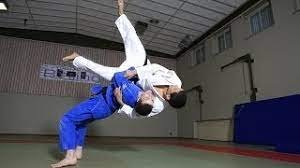
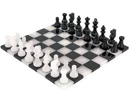

involve in the continuous learning and the realization of websites and software applications for several years, I like not only to learn new technologies but also to transmit them to my relatives and via the web.
I have corporate experience, in particular 4 months, as a back-end developer, during which my missions included debugging,
versioning and application analysis at "Proxiad" Nord in 2018".
More, I am a specialist in landscape genetics phylogenetics and ecotoxicology.
INTERESTS
I am a sports fan, more particularly judo and football. Besides, I am passionate about philosophy; medicinal and aromatic plants as well as geodynamics.
HOBBIES
Computer courses for my relatives
Reading anticipatory books
Chess and scrabble games
Furniture restoration
